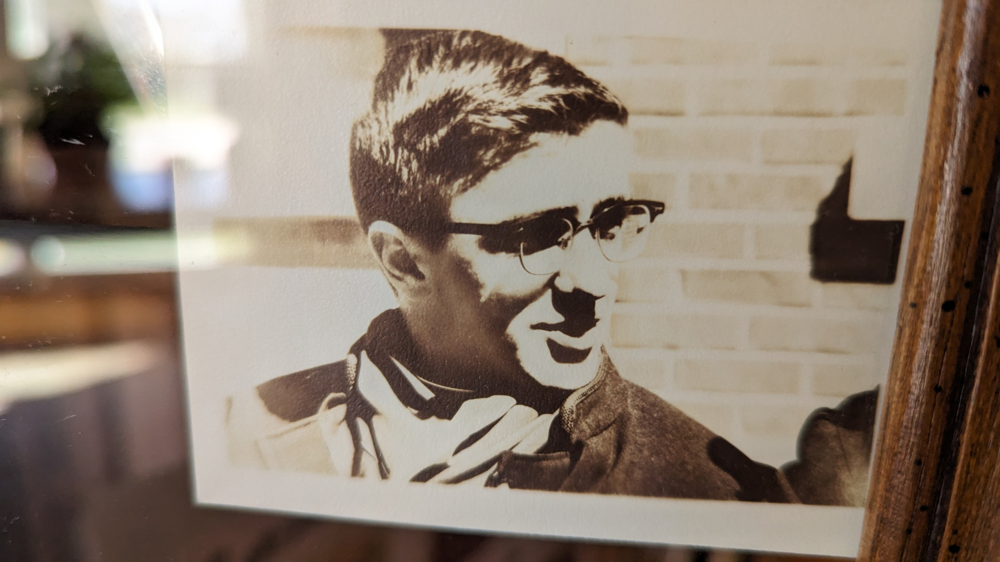
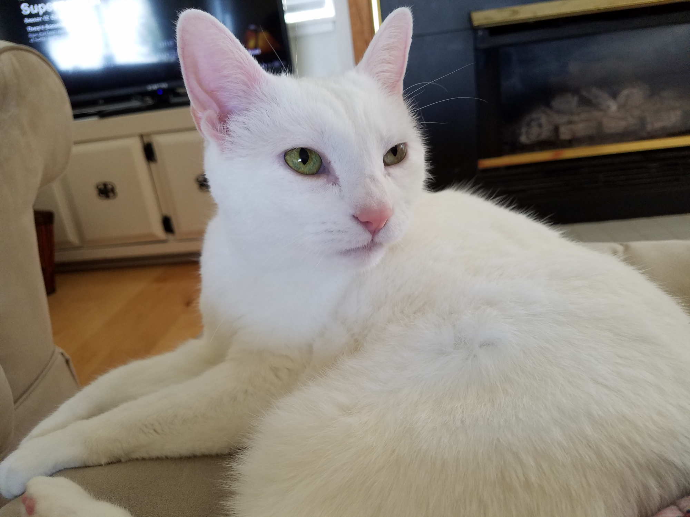

Ope...A Life
0
Francis Baiocchi
#love
#love

November 3, 1933 to April 10, 2024
As per Francis' wishes, there will be no funeral nor memorial service. He simply asked that you be kind to each other as you travel the road of life together.
Snowflake
#pnw #love
#pnw #love

(b. 25 July 2005) 29 December 2013 to 07 February 2024
Snowflake. Sweet Pea. Great White. Pretty Kitty. Sweetheart. Beautiful. Beautiful One. Honey Baked. Tenacious C. Darling One. Gatta Bianca. Her Nibs. Saucy Minx. Trouble. Little One. Beauty. Bella Ragazza. Our Girl. Queen B. White Puma.
caveat lector